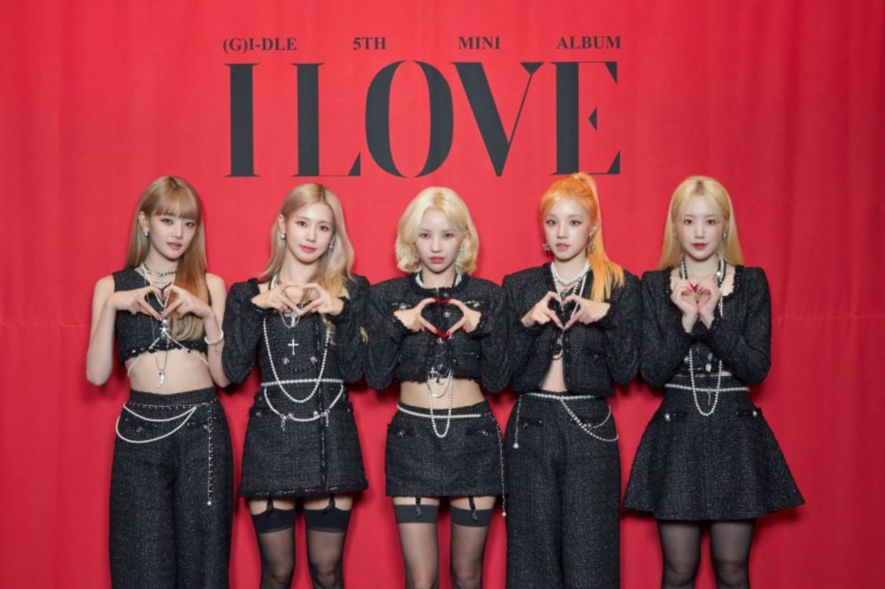

(하나, 둘)아이~! 안녕하세요 아이들입니다! 
아이들은 2018년 5월 2일에 데뷔한 큐브엔터테인먼트 소속의 5인조 다국적 걸그룹이다. 2018년 5월 2일 미니앨범 [I am]으로 데뷔하였으며, 포미닛, CLC의 직계 후배격인 걸그룹으로 큐브엔터테인먼트에서 CLC 이후 3년 만에 내놓은 걸그룹이다. 데뷔 초부터 흔치 않은 컨셉으로 인기몰이를 하며 데뷔 후 활동 20일 만에 음악 방송 1위, 음원 차트 상위권, 신인상 7관왕을 차지할 만큼 괴물 신인이었고, 라이엇게임즈의 이벤트성 그룹 K/DA 콜라보 활동 등을 통해 탄탄한 해외 팬덤을 가지고 있다. 또한 퀸덤에서 보여준 막내 걸그룹답지 않은 존재감과 무대 퍼포먼스, 뛰어난 실력을 기점으로 국내 팬덤 규모 또한 크게 성장하게 되면서 대세 걸그룹 중 한 팀으로 자리잡았다.